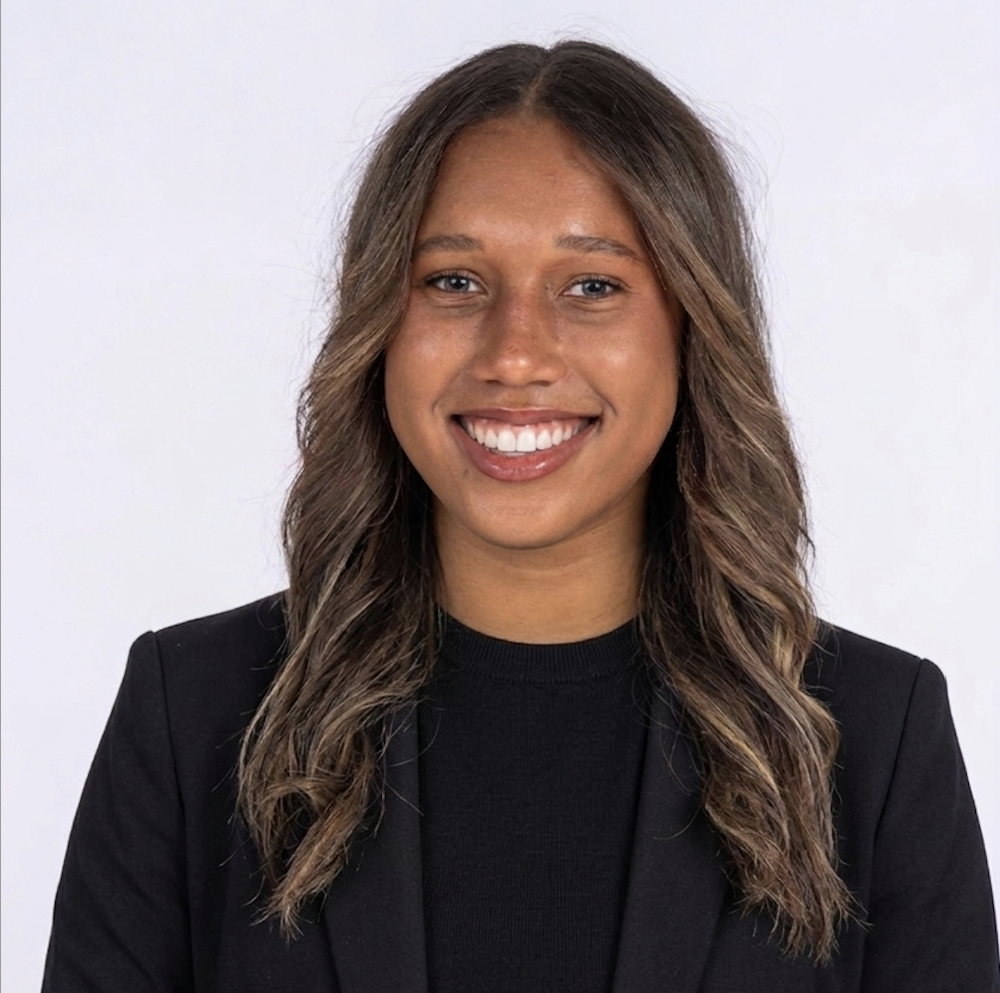

Washington University in St. Louis

I am a third-year Mechanical Engineering student at Washington University in St. Louis with experience in CAD design, BIM modeling, and hands-on engineering projects. Through coursework, hands-on projects, and professional internships, I have developed a strong foundation in engineering design, technical problem-solving, and turning complex ideas into practical, real-world solutions.
Beyond engineering, I compete as an NCAA Division III student-athlete on the Washington University women's soccer team. Balancing the demands of collegiate athletics with a rigorous engineering curriculum has strengthened my discipline, resilience, leadership, and ability to perform under pressure. Whether collaborating on a design project, solving technical challenges, or working in a fast-paced environment, I bring a strong work ethic and a commitment to excellence in everything I do.